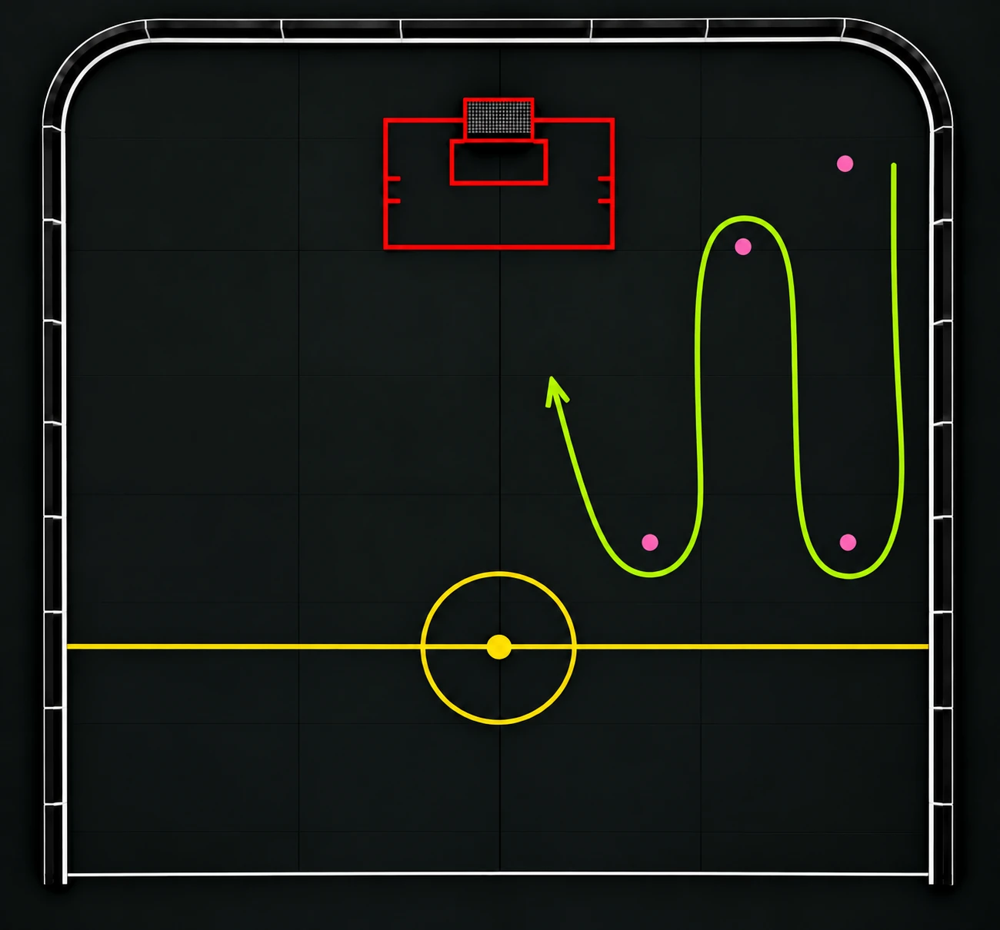

SkottSkottormen
En teknik- och skottövning där spelarna en i taget driver bollen med kontroll genom en slingrande bana av koner och avslutar med ett skott på mål.
Syfte
Träna bollkontroll, klubbteknik, riktningsförändringar och skott på mål i rörelse.
Organisation
Placera ut konerna i en slingrande bana enligt bilden och ställ spelarna i en kö med varsin boll. Se till att banan leder fram till mål.
Genomförande
- Första spelaren startar med boll och driver den kontrollerat genom slingan.
- Spelaren växlar riktning mellan konerna och håller bollen nära klubban.
- När spelaren tagit sig igenom hela slingan går spelaren mot mål och avslutar med ett skott.
- Spelaren hämtar sin boll och ställer sig sist i kön. Nästa spelare startar när det är fritt.
Tränartips
Uppmuntra spelarna att använda båda sidorna av bladet, titta upp mellan konerna och behålla kontrollen även när tempot ökar. Fokusera på kvalitet i bollbehandlingen före hastighet.
Spegelvända övningen för ett mångsidigt tränande.